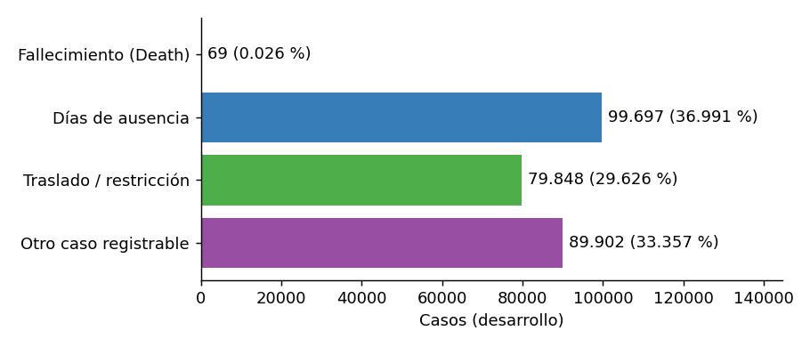
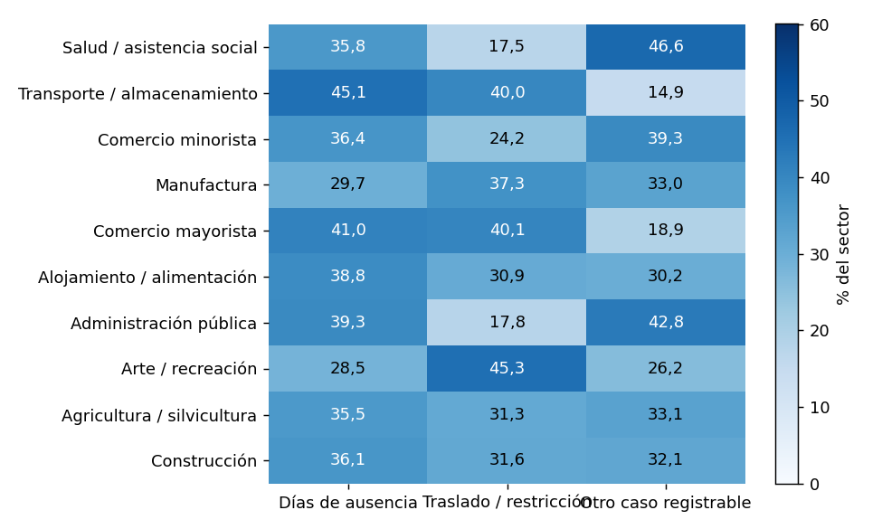
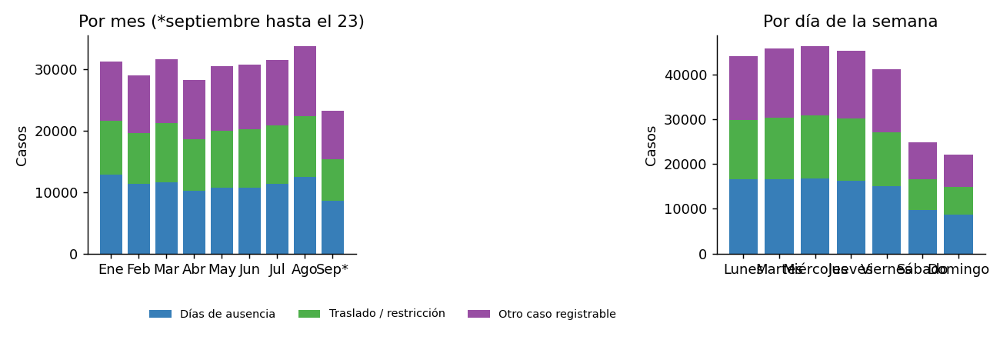

2. EDA: lo que muestra el dashboard#
Todo este capítulo usa solo los datos de desarrollo (enero a septiembre, 269.516 casos). La prueba se reservó antes y no se tocó. Cada sección corresponde a una gráfica de la pestaña 2 del dashboard.
2.1 El resultado: una clase casi no existe#


Figura 1 Resultado de los casos en el desarrollo.#
Qué se ve. Tres clases grandes y casi iguales (37 %, 30 % y 33 %) y una clase minúscula: 69 fallecimientos entre 269.516 casos (0,026 %). La clase más frecuente es 1.445 veces la más rara; sin Fallecimiento, las otras tres tienen razón 1,25.
Qué implica.
Un modelo que siempre responde «días de ausencia» acierta el 36 % de los casos. Por eso el accuracy solo engaña y se usan el balanced accuracy (promedio del recall de cada clase; la línea base trivial saca 0,25 con 4 clases) y el macro F1 score.
Los resultados sobre Fallecimiento se leen con cautela: con tan pocos casos cualquier estimación es imprecisa.
Se usa
class_weight='balanced'en el modelo y validación que conserve las proporciones de clase.
2.2 Información faltante#

Figura 2 Porcentaje faltante por predictor (desarrollo).#
Qué se ve. La ocupación (SOC) falta en el 18,9 % de los casos y las dos horas en el 12,3 % y 13,5 %. El resto falta casi nunca.
Qué tipo de faltante es. No se puede demostrar el mecanismo solo con estos datos, pero sí contrastar la hipótesis de que sea completamente al azar (MCAR):
La falta de SOC se asocia con el sector industrial (V de Cramér 0,166), más que con el resultado (0,029).
Se concentra por establecimiento: el 38,9 % de los establecimientos con 5 casos o más no tiene ningún SOC faltante, cuando bajo MCAR se esperaría el 16,2 %; y el 1,3 % los tiene todos faltantes, cuando se esperaría 0 %.
En la hora del incidente, el 98,6 % de los faltantes es estructural: el propio registro declara la hora como desconocida.
Conclusión. MCAR queda descartado. El patrón es compatible con MAR (depende del sector y de cómo describe cada empleador el puesto), aunque no se puede excluir un componente MNAR.
Decisión. No se borran filas ni se imputa la moda: eso favorecería a los empleadores que codifican mejor.
El faltante pasa a ser una categoría explícita «Unknown» dentro del Pipeline.
2.3 Resultado según el sector#


Figura 3 Distribución del resultado dentro de cada sector (porcentaje de los casos del sector).#
Qué se ve. Los sectores no se parecen. En transporte y almacenamiento el 45 % de los casos son días de ausencia; en salud, el 47 % son «otro caso registrable»; en arte y recreación, el 45 % son traslado o restricción. (Fallecimiento no se muestra porque su porcentaje es casi cero en todos.)
Qué implica. Esta diferencia entre sectores es la señal que aprovecha el modelo. No son tasas de riesgo: no hay horas trabajadas ni número de trabajadores como denominador. Parte de la diferencia puede deberse a qué ocupaciones hay en cada sector y a cómo reporta cada uno.
2.4 Qué predictores se asocian con el resultado#

Figura 4 V de Cramér entre cada predictor categórico y el resultado.#
Cómo leerlo. La V de Cramér va de 0 (sin asociación) a 1 (asociación total) y sirve para dos variables categóricas. Con casi 270 mil filas cualquier diferencia sale «significativa», así que importa el tamaño de la asociación, no el valor p.
Qué se ve. Sector (0,236) y ocupación (0,206) son los más asociados, luego tipo de incidente (0,150) y estado
(0,121). Tipo de establecimiento (0,056) y time_unknown (0,055) casi no aportan.
Las horas no entran en el gráfico porque son numéricas y se midieron aparte: su información mutua normalizada con el resultado es 0,004 (hora de inicio) y 0,002 (hora del incidente), es decir, prácticamente nula.
Cuidado. Esto muestra asociación, no causalidad, y que una variable esté muy asociada no prueba por sí sola que haya fuga de información (ver la auditoría en el capítulo 3).
2.5 Los casos en el tiempo#


Figura 5 Casos del desarrollo por mes y por día de la semana.#
Qué se ve. El volumen mensual es parecido (28 mil a 34 mil casos al mes; septiembre llega solo hasta el 23). El ciclo semanal es muy marcado: entre lunes y viernes hay entre 41 mil y 46 mil casos, y el fin de semana 22 mil a 25 mil.
Qué implica. Los días cercanos se parecen entre sí y el calendario cambia el volumen. Por eso la partición es hacia adelante en el tiempo y con 7 días de purga, y no al azar: una partición aleatoria pondría días casi iguales a ambos lados y daría un resultado optimista. La composición del resultado cambia poco entre trimestres (ver 3.6), así que el tiempo importa más por la dependencia entre días que por un cambio fuerte del fenómeno.